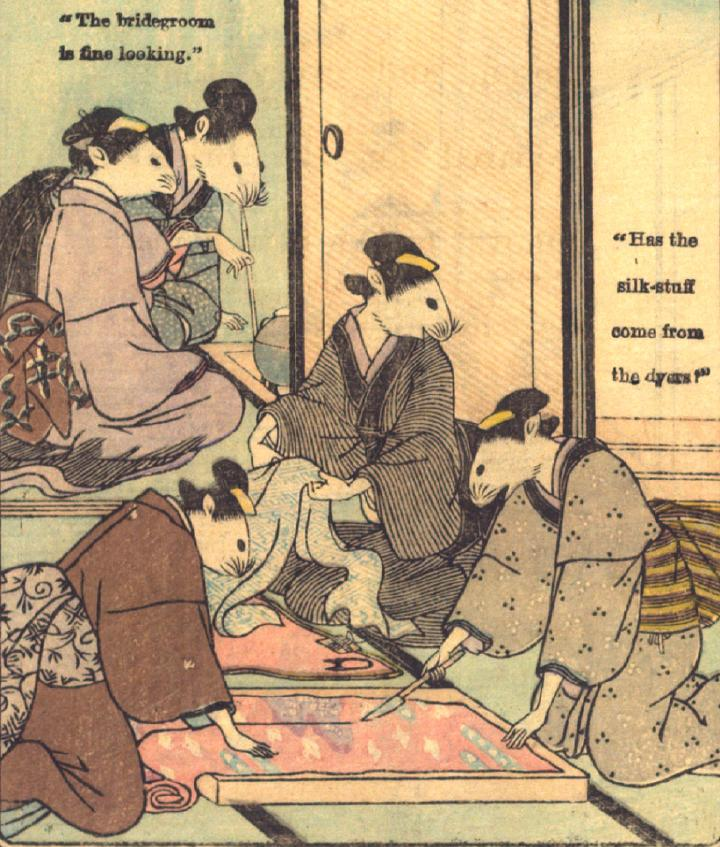

花嫁のための着物を仕立てる鼠たち。手前の部屋では、3体の鼠が、縫物をしたり、反物を切ったりしている。奥の部屋では、2体の鼠が囲炉裏を囲んでおり、そのうちの1体は煙管をくわえている。
著作者：David Thompson／出典：親書誌：U426_nichibunken_0112：Nedzumi no Yome-Iri／日付：2006／資源識別子：U426_nichibunken_0112_0004_0000
Copyright (c)2010- International Research Center for Japanese Studies, Kyoto, Japan. All rights reserved.